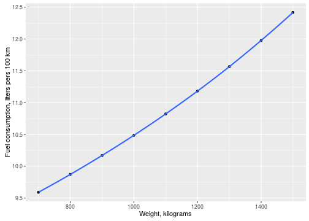

- Fuel consumption is an important parameter of a car, and its importance is growing nowadays
- This value can be dependent on many parameters
- This work investigates this and tries to predict the fuel consumption
Car fuel consumption prediction
With linear models
Ilya Ershov
Introduction
Approach used
The approach used in this work is linear models, which are built on top of standard mtcars R data frame.
One of the features of this data frame is usage of the U.S. measurement system instead of metric one, so to use metric ssytem, conversions should be applied.
model <- lm(mpg ~ disp + wt + hp, data = mtcars)
# accepts cm^3, kilograms and horsepowers, returns liters / 100 km
predictConsumption <<- function(disp, wt, hp){
dispCubInch <- disp / 16.3871
wtThousandsPounds <- wt * 2.20462 / 1000
mpg <- predict(model, data.frame(disp = dispCubInch, wt = wtThousandsPounds, hp = hp))[[1]]
return(282.5 / mpg)
}
Example graph
As an example of using this prediction function, let's show the graph of the fuel consumption for a Volkswagen Golf II with 1.3 Engine (1272 cubic centimeters, 55 hp) if it would have different weights (its real curb weight is between 910 and 1245 kilograms).

Shiny Application
The resulting data application is implemented using Shiny and accessible using this link: https://filejunkie.shinyapps.io/coursera_data_products_course_project/